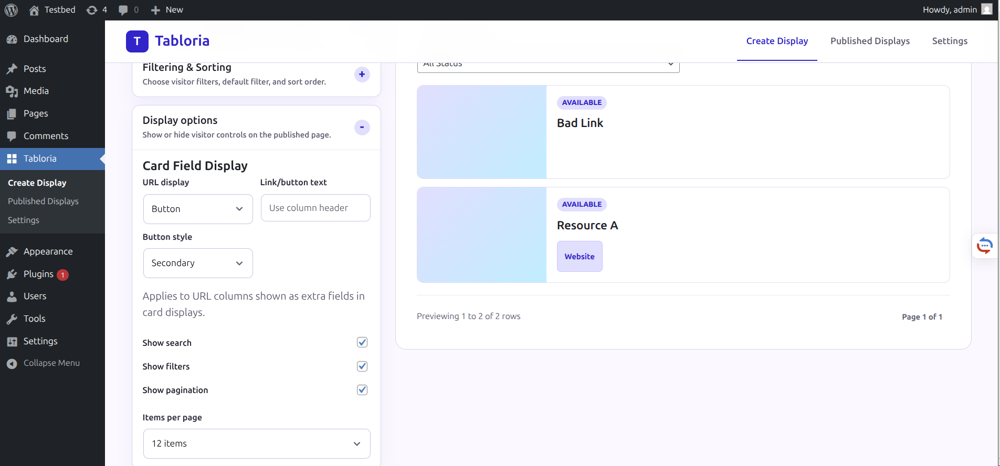
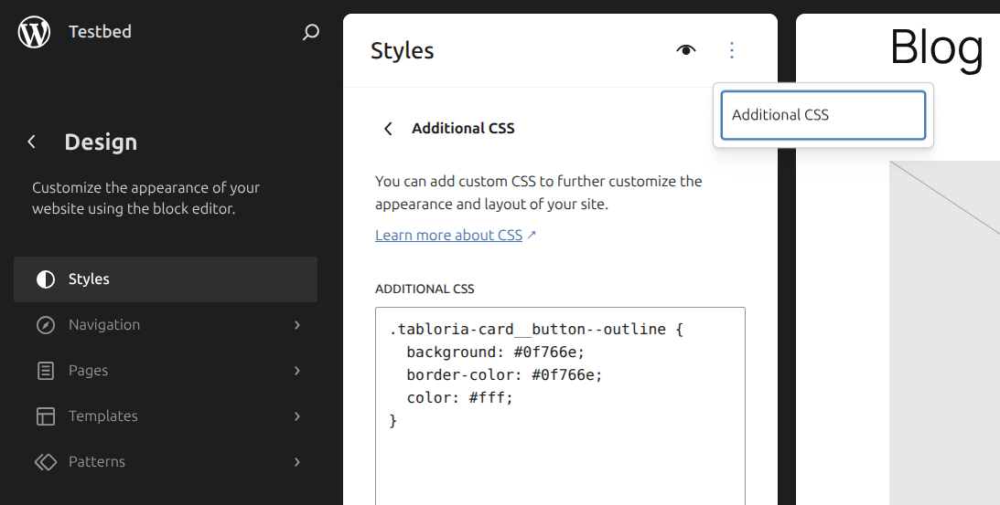

Why card links often work better as buttons
Plain hyperlinks are fine for simple text, but card displays often represent actionable resources: lessons, products, people, events, locations, or catalog items. In those cases, visitors usually benefit from a clear call to action.
For example, instead of showing a column label as a regular link, a card can show a button such as View the Lesson. The button text can stay the same across cards, while each card still opens the unique URL from its own CSV row.
Set URL fields as buttons in Tabloria
In Tabloria, URL button settings are part of the card display configuration. They apply to URL columns shown as extra fields in card-based display types such as Searchable Listings, Product Catalog, Team Directory, Event Schedule, and Pricing Table.
- Upload or choose a CSV file that includes a URL column.
- Choose a card-based display type. Do not use Simple Data Table for this feature.
- Make sure the URL column is included in the visible fields for the display.
- Open Display options.
- Find Card Field Display.
- Set URL display to Button.
- Optionally enter custom text such as View the Lesson.

If the custom link/button text is empty, Tabloria falls back to the column header. That keeps existing displays compatible and gives you a quick way to change the label by renaming the column header.
Choose a button style
When URL display is set to Button, Tabloria shows a button style dropdown. The current button styles are:
| Style | Use it when |
|---|---|
| Theme default | You want the button to follow the active WordPress theme as much as possible. |
| Primary | The URL is the main action on the card. |
| Secondary | The URL is useful but should not dominate the card. |
| Outline | You want a lighter button that still looks actionable. |
The link remains a normal HTML anchor. Each button still uses the row-specific URL from the CSV, opens in a new tab, and includes safe link attributes.
Custom CSS
Tabloria includes CSS hooks so you can adjust button styles without editing plugin files. The frontend classes are:
.tabloria-card__button .tabloria-card__button--theme .tabloria-card__button--primary .tabloria-card__button--secondary .tabloria-card__button--outline
The Theme default option also adds the WordPress-friendly class wp-element-button, which helps block themes apply their own button styling.
For a block theme, you can usually add CSS in the Site Editor:
- Open Appearance in WordPress admin.
- Open Editor.
- Go to Styles.
- Open the style menu and choose Additional CSS.

For example, this changes Outline buttons to a green filled button:
.tabloria-card__button--outline {
background: #0f766e;
border-color: #0f766e;
color: #fff;
}
For classic themes, the same CSS is often available under Appearance → Customize → Additional CSS. If your theme hides that menu, the Site Editor or your theme's custom CSS area is the better place to check.
FAQ
Does this affect Simple Data Table displays?
No. Simple Data Table output remains table-focused. URL columns in tables continue to render as regular links.
Can every card have a different destination URL?
Yes. The button label can be shared, but each card still uses the URL value from its own CSV row.
Can I use the column header as the button text?
Yes. Leave the custom link/button text empty and Tabloria will use the URL column label.
Can I still style buttons with CSS?
Yes. Use the .tabloria-card__button classes and the style modifiers shown above.